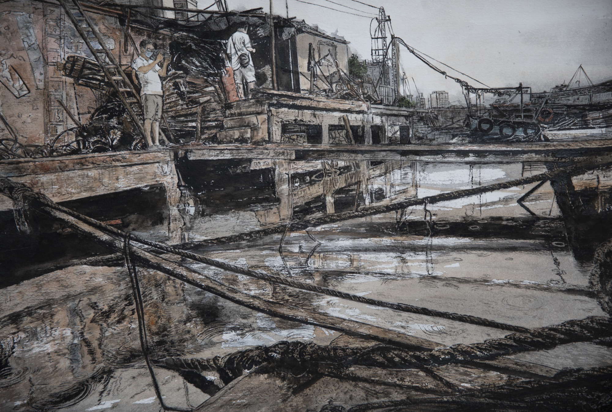

Traces
痕迹

- Artwork ID / 作品编号
- KW-W-000035
- Year / 年份
- 2022
- Medium / 媒介
- Watercolor on paper / 纸本水彩
- Dimensions / 尺寸
- 39 × 54 cm (H × W / 高 × 宽)
About the work / 作品介绍
Traces is based on an old harbor in Shenzhen. Ropes, power lines, reflections, and marks left by boats and structures cross one another, turning the harbor into a surface repeatedly revised by use, weather, and time. Human figures are not the compositional center, yet their presence remains legible through maintenance, passage, and mooring. The work treats ordinary objects as carriers of memory and observes how people and place leave evidence through prolonged contact.
《痕迹》取材于深圳旧码头。绳索、电线、水面倒影以及船体和建筑留下的线痕相互穿插，使码头成为一张被使用、天气与时间反复改写的表面。人物并非画面的中心，却通过维护、通行和停泊留下持续可见的存在。作品把普通物件视为记忆的载体，观察人与场所在长期接触中如何共同留下证据。